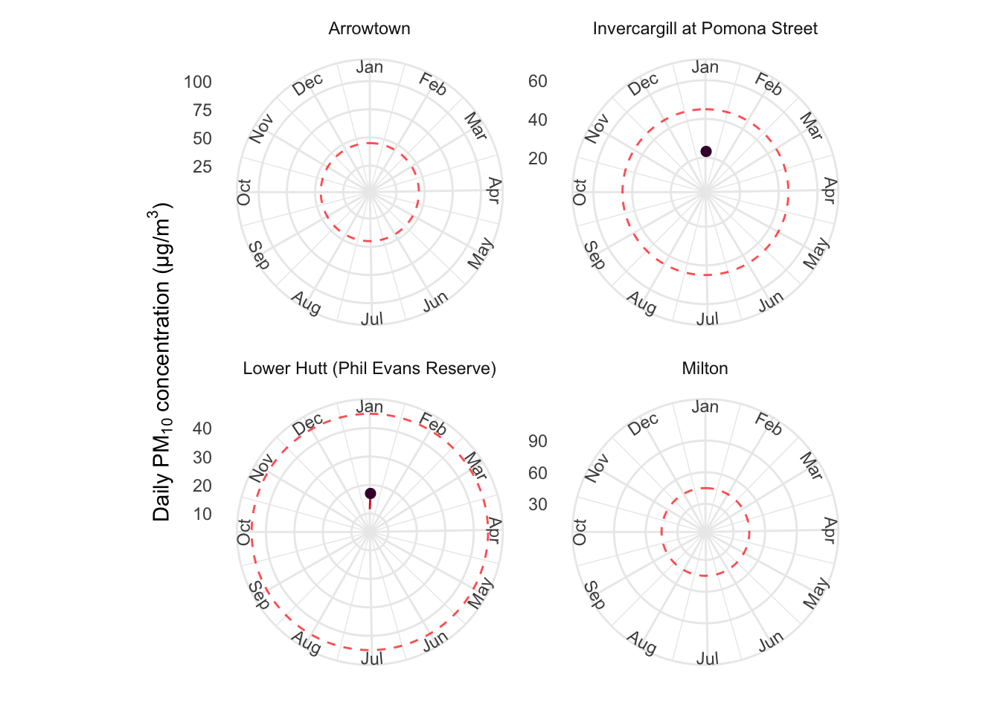

Most of the time, New Zealand enjoys good air quality, allowing us to step outside and breathe a breath of fresh air, knowing it’s safe. However at certain times and places, our air is polluted to such levels that it causes us harm, or in the worst cases, premature death. Here I access air quality data from LAWA and explore it for one site known for severe winter air pollution.
1 Libraries
Show the code
library(tidyverse) # provides ggplot, dplyr, etclibrary(janitor) # tidy up messy variable nameslibrary(gganimate) # provides animationslibrary(geomtextpath) # makes labels curved on polar graphlibrary(leaflet) # for interactive mapping
2 Import data
Land, Air, Water Aotearoa (LAWA) is a collaboration between New Zealand’s 16 regional councils and unitary authorities, the Cawthron Institute, the Ministry for the Environment, the Department of Conservation, and Stats NZ. LAWA provides state of the environment monitoring data for various environmental domains, including; swimming water quality, estuary health, groundwater quality, lake quality, land cover, river quality, water quantity, and of particular interest here, air quality.
LAWA makes their data freely available at https://lawa.org.nz/download-data. From this source I downloaded an Excel sheet of air quality data for the period 2016 to 2022. Currently, the available parameters are PM10 and PM2.5.
Particulate matter (PM) can have adverse effects on human health and the environment. The numbers 10 and 2.5 refer to the diameter of the particles in micrometers (µm).
What are the human health impacts of PM in New Zealand?
Hales et al. (2021) did a retrospective cohort epidemiological study of the association between PM2.5, NO2 and mortality and morbidity for 2.2m New Zealanders. They found that exposure to PM2.5 per 10 μg/m3 increased the risk of death by 11% (95% CI 7-15%) and increased the risk of ischaemic heart disease by 29% (95% CI 23-35%).
Hales, S., Atkinson, J., Metcalfe, J., Kuschel, G., & Woodward, A. (2021). Long term exposure to air pollution, mortality and morbidity in New Zealand: cohort study. Science of The Total Environment, 801, 149660.
Show the code
dat <- readxl::read_xlsx("data/airqualitydownloaddata_2016-2022.xlsx",sheet ="Air Quality Data") |># read in dataclean_names() |># tidy up messy namesmutate(year =year(sample_date)) |># extract year as a new variablefilter(!is.na(sample_date) &!is.na(concentration)) # filter out NAs
3 What are the worst sites?
Air quality is known to be worst in more southern areas, places where home heating via wood burning or coal is more prevalent, particularly during the colder months of the year.
But let’s check some of these assumptions by extracting the worst 5 sites for highest recorded PM10 values (Table 1).
Show the code
dat |>filter(indicator =="PM10") |># just look at PM10group_by(site_name) |>summarize(max_concentration =max(concentration, na.rm =TRUE)) |># get max conc. per sitearrange(desc(max_concentration)) |># sort descendingtop_n(5, max_concentration) |># get top 5 sites knitr::kable()
Table 1: Top 5 sites with highest PM10 concentrations
site_name
max_concentration
Milton
202.800
Arrowtown
157.900
Lower Hutt (Phil Evans Reserve)
155.400
Invercargill at Pomona Street
138.980
Washdyke Alpine
123.496
Indeed most of these locations are in South Island, with the exception of Lower Hutt, which is at the southern end of the North Island.
Show the code
processed_data <- dat %>%filter(indicator =="PM10") %>%# just look at PM10group_by(site_name) %>%summarise(max_concentration =max(concentration, na.rm =TRUE), latitude =first(latitude),longitude =first(longitude) ) %>%# get max conc. per sitearrange(desc(max_concentration)) %>%# sort descendingtop_n(5, max_concentration) %>% sf::st_as_sf(coords =c("longitude", "latitude"), crs =4326)# Create a color palettepal <-colorNumeric(palette ="YlOrRd",domain = processed_data$max_concentration, # Set the domain to the range of max_concentrationna.color ="transparent",reverse =TRUE)# Create a Leaflet mapleaflet(processed_data) %>%addTiles() %>%addCircleMarkers(radius =~sqrt(max_concentration), # Scale the radius proportional to max_concentrationcolor =~pal(max_concentration),fillOpacity =1,stroke =0,label =~paste0(site_name, ", ", "Max PM10: ", max_concentration) ) %>%addLegend("bottomright",pal = pal,values = processed_data$max_concentration, # Pass the actual max_concentration valuestitle ="Max PM10 Concentration",opacity =0.7,labFormat =labelFormat(transform =function(x) sort(x, decreasing =TRUE)) )
4 Static plot of seasonal air quality
Now let’s check the assumption that air quality is worse during the colder months of the year. Here, I plot daily PM10 concentrations over 2022 for one site (Arrowtown) (Figure 1). The data shows a significant spike during the winter months, with a number of exceedances of the WHO guideline of 45 µg/m³.
Figure 1: PM10 daily concentrations at Arrowtown, 2022. Dashed line shows WHO guideline value.
5 Make an animated plot
Let’s enhance our analysis by creating an animated polar chart that reveals the daily PM10 concentrations over time (Figure 2). This approach effectively highlights the cyclical nature of seasonal air quality. By animating the data, we can observe the progression of PM10 levels throughout the year, providing a clear visual representation of how air quality deteriorates during the winter months.
Show the code
# Define the start dates for each season according to New Zealand definitionsseason_start_dates <-as.Date(c("2022-12-01", "2022-03-01", "2022-06-01", "2022-09-01"))# Create the plot with seasonal division lines and y-axis labels inside the chartp <-ggplot(dat_filtered) +geom_hline(yintercept =45, linetype ="dashed", color ="red", alpha =0.7) +geom_line(aes(x = sample_date, y = concentration),color ="#D72638",size =0.5) +geom_vline(xintercept =as.numeric(season_start_dates),linetype ="dashed",color ="black",alpha =0.3 ) +geom_point(aes(x = sample_date, y = concentration), color ="#420039", size =2) +scale_x_date(date_labels ="%b", date_breaks ="1 month") +coord_curvedpolar() +labs(title =bquote("Daily PM"[10] *" concentration (µg/m"^3*") in Arrowtown, 2022"),x ="",y ="" ) +theme_minimal() +theme(plot.title =element_text(hjust =0.5, colour ="#420039"),axis.text.y =element_blank(),axis.ticks.y =element_blank(),axis.text.x =element_text(color ="#12355B",face ="bold",size =14,vjust =-0.5 ) ) +annotate('text',x =as.Date("2022-01-03"),y = my_breaks,label =round(my_breaks, 2),angle =0,hjust =-0.1,vjust =0.5 ) +geom_segment(data = tick_data,aes(x = x,xend = xend,y = y,yend = yend ),color ="black") +transition_reveal(sample_date) +ease_aes('linear') # Easing to make the animation smoother# Render the animation and save as GIFanim <-animate(p, nframes =100, fps =10, renderer =gifski_renderer())anim
Figure 2: Animated polar chart of PM10 daily concentrations at Arrowtown, 2022. Dashed circle shows WHO guideline value. Dashed lines show seasons.
6 Make multiple animated plots
Now let’s check out whether other high PM10 sites also have similar seasonal dynamics in air quality (we’ll also use a different year to make sure) (Figure 3).
Show the code
top_4 <- dat |>filter(indicator =="PM10") |># just look at PM10group_by(site_name) |>summarize(max_concentration =max(concentration, na.rm =TRUE)) |># get max conc. per sitearrange(desc(max_concentration)) |># sort descendingtop_n(4, max_concentration)p2 <- dat |>filter(site_name %in% top_4$site_name) |>filter(indicator =="PM10") |>filter(year ==2019) |>arrange(sample_date) |>mutate(sample_date =as.Date(sample_date)) |>ggplot() +geom_hline(yintercept =45, linetype ="dashed", color ="red", alpha =0.7) +geom_line(aes(x = sample_date, y = concentration), color ="#D72638", size =0.5) +geom_point(aes(x = sample_date, y = concentration), color ="#420039", size =2) +scale_x_date(date_labels ="%b", date_breaks ="1 month") +coord_curvedpolar() +theme_minimal() +labs(x ="", y =bquote("Daily PM"[10] *" concentration (µg/m"^3*")")) +transition_reveal(sample_date) +ease_aes('linear') +facet_wrap(~site_name, scales ="free_y")# Render the animation and save as GIFanim2 <-animate(p2, nframes =100, fps =10, renderer =gifski_renderer())anim2

Figure 3: Animated polar chart of PM10 daily concentrations at Arrowtown, Invercargill, Lower Hutt, and Milton, 2019. Dashed circle shows WHO guideline value. Note the y-axes differ between plots.
Some interesting results here.1 Firstly, Arrowtown demonstrates similar seasonal dynamics to 2022, with low concentrations in summer and a number of exceedances during winter. Invercargill also shows similar seasonality, albeit at lower concentrations.
Lower Hutt remains well below the guideline all year-round, but exhibits reversed seasonality, with higher concentrations in summer. It’s worth noting that Lower Hutt is included in the top four due to a single large spike in 2022, so it might be reasonable to exclude this site from further analysis.
Milton is particularly interesting as it has numerous exceedances during winter but appears not to monitor air quality during summer (this trend is true in other years as well).
7 Next steps
This analysis has provided some interesting insights into the seasonality of PM10 concentrations in New Zealand. The next steps could involve:
Conduct a formal test for seasonality between sites
Classify sites into categories such as ‘high-summer’, ‘high-winter’, ‘high-all-year-round’, or ‘low’
Produce animations for all sites on a map
Investigate causes of seasonality (latitude?)
Repeat analyses for PM2.5
Put multiple years on single graph
Footnotes
Note the y-axes differ between each site. This is due to the large magnitude in differences. My goal here was to explore the relative seasonality between each site, so having free axes makes sense. If the goal was instead to explore relative magnitudes between each site, I could have simply set facet_wrap(~site_name, scales = "fixed").↩︎